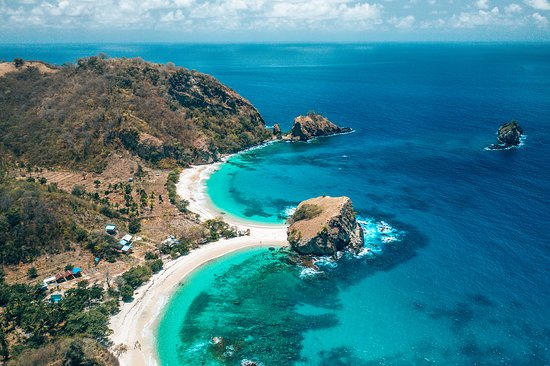

Tentang Kota Maumere
Maumere adalah ibu kota Kabupaten Sikka, Pulau Flores, NTT. Terkenal dengan pantai yang indah, air jernih, dan masyarakat yang ramah. Budaya serta kerajinan tenun ikat diwariskan turun-temurun.

Maumere adalah ibu kota Kabupaten Sikka, Pulau Flores, NTT. Terkenal dengan pantai yang indah, air jernih, dan masyarakat yang ramah. Budaya serta kerajinan tenun ikat diwariskan turun-temurun.

Pantai Koka adalah salah satu tempat indah di Maumere. Selain itu ada Pantai Waiara, Pulau Pungil, dan dekat dengan Danau Kelimutu. Warga hidup dari laut, pertanian, dan tenun ikat.